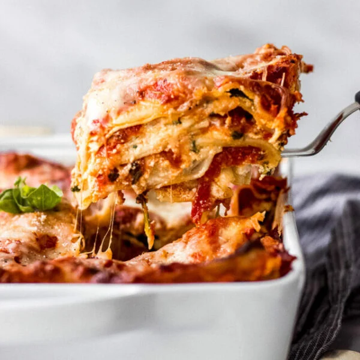

Home
Lasagna Recipe

Description:
This is a classic vegetarian lasagna with spinach.
Wherever you can try to use fresh ingredients.
Ingredients:
- 250 gram lasagna pasta leaves
- 1 medium onion, finely chopped
- 4 cloves garlic, finely chopped
- pinch red pepper flakes
- 220 gram fresh spinach, chopped
- 425 gram ricotta
- 3/4 cup shredded parmesan cheese
- 1,5 cup shredded mozzarella
- 1 egg
- 2,25 cup tomato sauce
- salt and pepper to taste
Steps:
- Prepare lasagna leaves if necessary
- Preheat oven to 190 deg. C
-
Spinach mixture:
- Fry onion
- Add garlic and simmer
- Season with red pepper, salt and ground pepper
- Add spinach and simmer till tender
- Transfer to a strainer and press out liquid
- Set aside
-
Ricotta filling:
- In a bowl mix ricotta with 1/2 cup parmesan, 3/4 cup mozzarella
and salt and pepper to taste
- Stir in the egg
- When the spinach has cooled enough mix it in
- Spread 1/4 cup tomato sauce in oiled baking dish
- Cover with lasagna sheets and top with 1/3 of spinach / ricotta mixture
- Sprinkle on 1/4 cup mozzarella and 1/2 cup tomato sauce
- Repeat twice and add one more layer off lasagna sheets
- Top with remaining tomato sauce, mozzarella and parmesan
- Cover with foil and bake for 25 minutes
- Remove foil and bake another 20-30 minutes